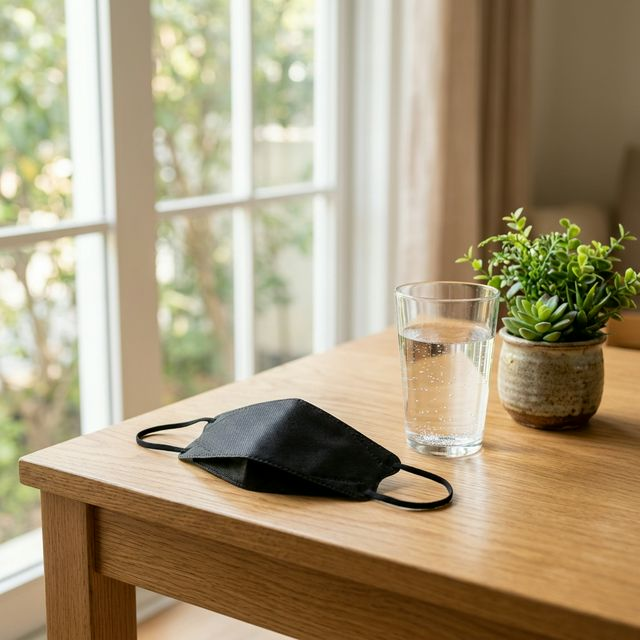
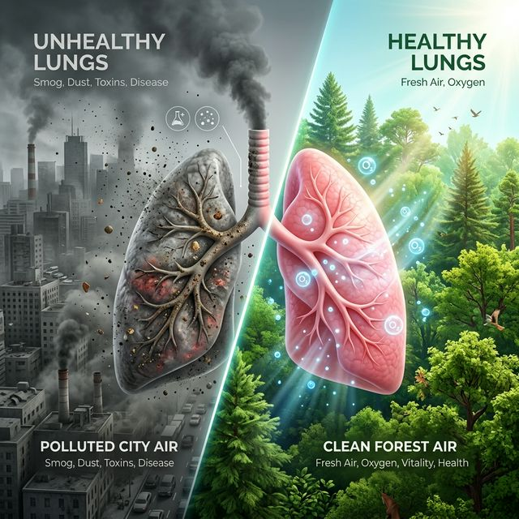

미세먼지보다 입자가 4분의 1 이하인 초미세먼지는 기도에서 걸러지지 않고 폐포 깊숙한 곳까지 침투하며, 혈관을 타고 뇌와 심장까지 이동할 수 있어 백해무익합니다. 특히 벚꽃 축제장처럼 사람이 붐비는 곳에서는 타인의 비말과 먼지가 섞여 더욱 복합적인 오염원이 됩니다. 오늘처럼 대지 정체가 심한 날에는 아무리 풍경이 좋아도 신체적인 방어막을 철저히 구축해야 합니다.
나들이를 나갈 때 유행하는 린넨 마스크나 일반 비말 차단용 마스크(KF-AD)로는 초미세먼지를 막기에 역부족입니다. 식약처 인증 KF94 마스크 착용이 필수입니다. 하지만 숨쉬기가 답답하다는 이유로 코를 내놓는 '코스크'를 하는 경우가 많은데, 이는 미세먼지를 그대로 폐로 흡입하겠다는 것과 다를 바 없습니다.
나들이를 즐기고 집에 돌아왔다면, 겉옷에 묻은 보이지 않는 먼지부터 옷장에 넣기 전 털어내는 습관이 중요합니다. 이후 다음의 5단계 루틴을 따라 신체에 붙은 오염물질을 완벽히 제거하십시오.
STEP 1: 현관 앞 옷 먼저 털기. 먼지는 실내로 들어오는 순간 가구와 침구에 정착합니다. 현관 밖이나 베란다에서 겉옷을 가볍게 털어주세요.
STEP 2: 손과 발 30초 이상 세정. 비누 거품을 충분히 내어 손등, 손가락 사이사이까지 꼼꼼하게 씻어줍니다.
STEP 3: 구석구석 딥 클렌징. 얼굴 모공 속에 박힌 초미세먼지를 제거하기 위해 약산성 클렌저를 사용해 부드럽게 세안합니다.
STEP 4: 콧속과 목 가글링. 생리식염수로 코 세척을 하거나, 따뜻한 물로 목 깊숙이 가글하여 점막에 붙은 먼지를 배출합니다.
STEP 5: 충분한 수분 섭취. 기관지 내부가 건조하면 염증이 생기기 쉽습니다. 미지근한 물을 수시로 마셔 혈액 내 노폐물을 배송시키세요.
장기간 초미세먼지에 노출될 경우, 단순한 기침을 넘어 심혈관 질환의 발생 위험이 현저히 높아진다는 연구 결과가 2026년 공중보건 포럼에서도 발표되었습니다. 미세먼지 입자가 폐포를 통과해 혈액 내로 유입되면 염증 반응을 일으키고 혈전 형성을 촉진하기 때문인데요. 특히 노약자와 임산부, 영유아의 경우 면역 체계가 약해 일반 성인보다 2배 이상의 주의가 필요합니다.

오늘 발행하는 데이터 리포트에 따르면, 실내에서도 공기청정기 필터 관리가 성적이 좋지 않을 경우 외부 농도가 낮아도 실내 공기질이 더 안 좋을 수 있음을 발견했습니다. 헤파(HEPA) 필터 13등급 이상의 청정기를 사용하고, 요리 후에는 미세먼지가 높더라도 짧고 굵게 환기를 시킨 뒤 급속 청정을 하는 것이 올바른 실내 관리법입니다.
| 지역명 (City) | 농도 (㎍/㎥) | 지수 상태 (Status) | 권고 행동 (Action) |
|---|---|---|---|
| 서울/인천 | 78 | 매우 나쁨 (Very Bad) | 실외 활동 제한, 마스크 필수 |
| 대전/세종 | 65 | 나쁨 (Bad) | 장시간 활동 자제, 환기 최소화 |
| 대구/부산 | 35 | 보통 (Normal) | 환기 권고, 야외 활동 가능 |
| 울산/경남 | 28 | 좋음/보통 | 벚꽃 나들이 최적 |
| 제주 | 15 | 매우 좋음 (Perfect) | 청정 지역, 환기 권장 |
나들이 후 저녁 식사 메뉴로 기관지에 도움을 주는 음식을 선택해 보시는 건 어떨까요? 도라지와 배는 사포닌 성분이 풍부해 기관지 점막을 튼튼하게 하고 가래 배출을 돕습니다. 또한 마늘의 알리신 성분은 체내 중금속 배출에 효과적이며, 녹차의 카테킨 성분은 미세먼지의 중금속이 흡수되는 것을 방지해 줍니다. 삼겹살이 미세먼지에 좋다는 속설은 미끄러운 기름기가 먼지를 씻어낸다는 착각일 뿐, 실제로는 지방이 미세먼지의 흡수력을 높일 수 있다는 연구 결과가 있으니 주의하십시오.
봄의 상징인 벚꽃을 마음껏 감상하지 못하고 마스크를 써야 한다는 사실이 못내 아쉽지만, 우리의 건강보다 소중한 것은 없습니다. 오늘 알려드린 5단계 루틴과 마스크 선택법을 잘 숙지하셔서, 즐거운 추억 뒤에 아픔이 남지 않는 현명한 나들이가 되시길 바랍니다. 내일은 대기가 확산되어 더욱 맑은 하늘 아래서 벚꽃을 볼 수 있기를 간절히 바래봅니다.
정확한 건강 팩트와 생생한 정보를 담은 리포트로 여러분의 건강한 라이프스타일을 응원하겠습니다. 오늘도 맑은 숨, 행복한 일요일 보내세요!